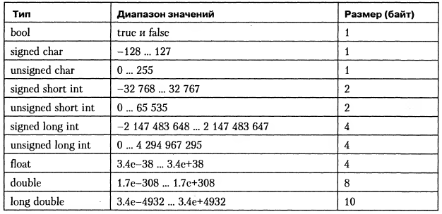

Тип данных определяет множество значений, набор операций, которые можно применять к таким значениям и способ реализации хранения значений и выполнения операций.
Тип данных определяет множество значений, набор операций, которые можно применять к таким значениям и способ реализации хранения значений и выполнения операций.
Язык C предоставляет четыре основных спецификатора арифметических типов char, int, float и double, а также модификаторы signed, unsigned, short и long.
